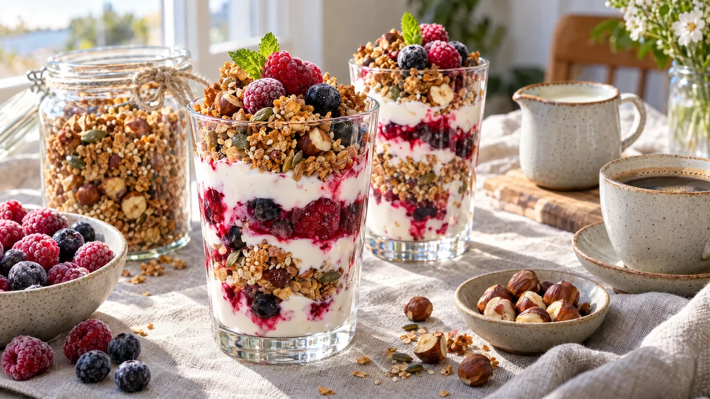

RESTFEST · RECEPTFrukost & brunch
Knaprig granola med hasselnötter, havreyoghurt och frostiga bär
De sista havregrynen i paketet, en näve frön och lite sirap rostas till stora, knapriga granolakluster som doftar kanel och kardemumma. De varvas i höga glas med havreyoghurt och frysta bär som tinar till en rosa sky. Ser ut som frukostbuffén på ett boutiquehotell, och en sats räcker i två veckor.
- Förberedelse
- 10 min
- Tillagning
- 30 min + 30 min svalning
- Portioner
- ca 1 liter granola (8–10 portioner)
- Nivå
- Nybörjare
 Det här behöver du
Det här behöver du
Tryck på + vid det du behöver köpa.
Granola
Till servering
Gör så här
- Sätt ugnen på 160 grader. Klä en långpanna med bakplåtspapper.
- Blanda havregryn, hasselnötter, frön, kanel, kardemumma och salt i en stor skål.
- Värm olja, sirap och vaniljsocker i en kastrull tills det är varmt och lättflytande. Häll det över havreblandningen och rör tills allt är jämnt täckt.
- Bred ut granolan på plåten i ett jämnt lager, ca 1 cm tjockt, och tryck till hårt med baksidan av en slickepott eller botten av ett glas. Det är det som ger stora kluster.
- Rosta i mitten av ugnen i 25–30 minuter, tills granolan är jämnt gyllenbrun. Rör inte, men vrid plåten halvvägs om ugnen värmer ojämnt.
- Låt granolan svalna helt på plåten, minst 30 minuter. Den är mjuk när den är varm och blir knaprig först när den har svalnat.
- Bryt den i bitar av olika storlek och blanda ner russinen.
Dekoration och servering
- Varva havreyoghurt, frysta bär och granola i höga glas, så att lagren syns genom glaset.
- Lägg några stora kluster överst så att de sticker upp, och avsluta med några bär och ett myntablad.
- Ta fram bären ur frysen 10 minuter innan, då hinner de släppa lite saft och färga yoghurten rosa.
- Förvara granolan i en lufttät glasburk, där håller den sig knaprig i ca 2 veckor.
- Knyt ett linnesnöre runt burken, så har du en färdig present.
Mått och ugnstemperaturer
Måtten är svenska (dl, msk, tsk, krm). Ugnstemperaturerna gäller vanlig ugn med över- och undervärme; med varmluft, sänk med 20 grader.